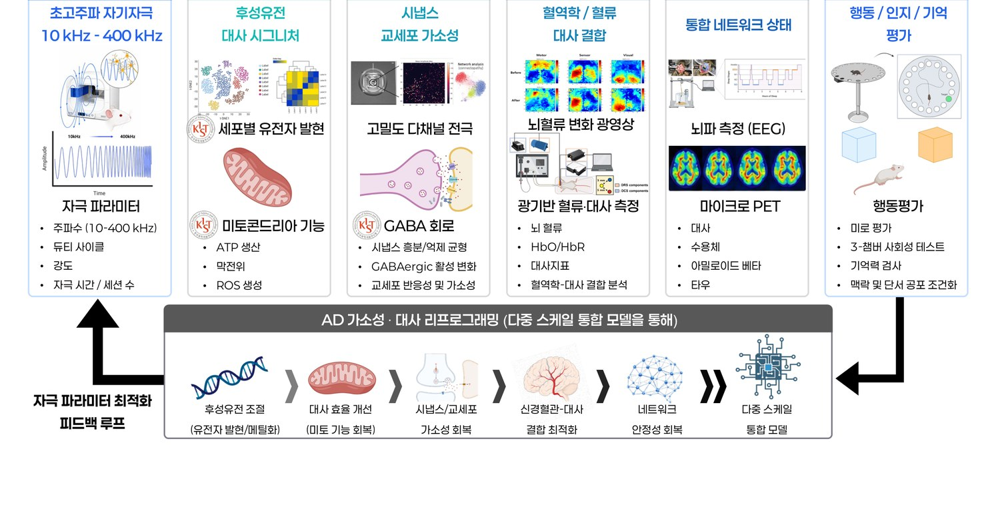

Why the REMAP Fellowship
More than a postdoc position — own your project, build an independent research identity, and grow into a PI through multiple GIST–KIST mentorship, seed funding, and a structured career pathway.
Fellowship Benefits
Five Pillars of Growth
The REMAP Fellowship is built around five pillars that turn an independent project into an independent research career.
Research Leadership
Own your project — independent budget, authorship, and IP rights.
Entrepreneurship
IP/tech-transfer training, GIST startup infrastructure, and industry mentoring.
Multi-mentor Convergence
Multiple mentorship from GIST + KIST PIs with a personalized IDP.
Advanced Skill Integration
Cross-train across platform, mechanism, and translational tracks; KIST secondment included.
Pioneer PI Pathway
Yrs 1–2 intensive research → Yr 3+ grant planning → Yr 5 faculty or startup transition.
GIST–KIST Dual Infrastructure
Fellows benefit from two world-class research environments and move fluidly between functional and molecular analysis.
Stimulation & Functional Hub
- UHF-MS stimulation platform (10–400 kHz)
- Optical intrinsic signal imaging (OISI)
- Diffuse reflectance / correlation spectroscopy (DRS-DCS)
- EEG/EMG & behavioral testing suites
- Micro-PET imaging
Molecular & Mechanism Hub
- scRNA-seq and multi-omics core
- Astrocyte and mitochondrial assay platforms
- Epigenetics analysis
- Electron microscopy
- AI-based drug discovery pipeline
One integrated, multi-scale platform
Fellows contribute to a single closed-loop pipeline — from stimulation input to molecular, cellular, circuit, and whole-brain readouts — feeding back into parameter optimization.
